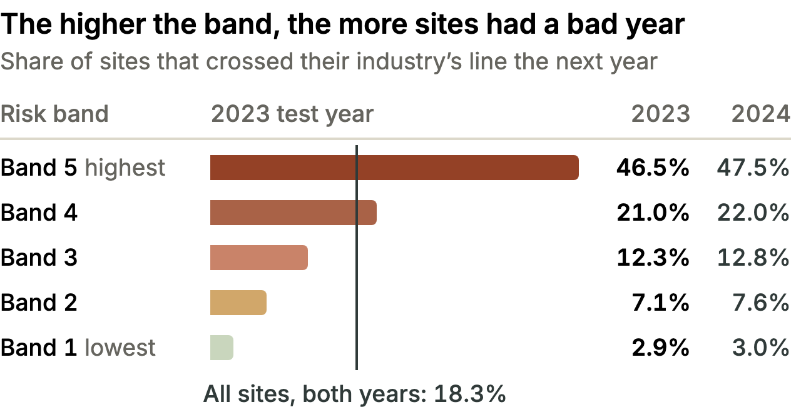
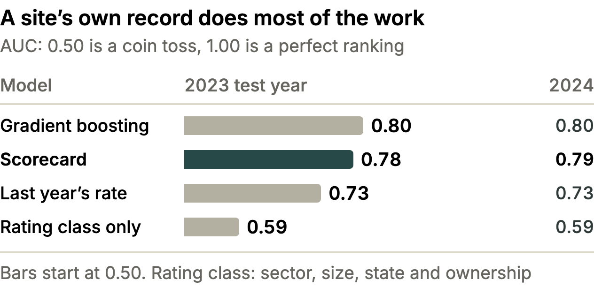
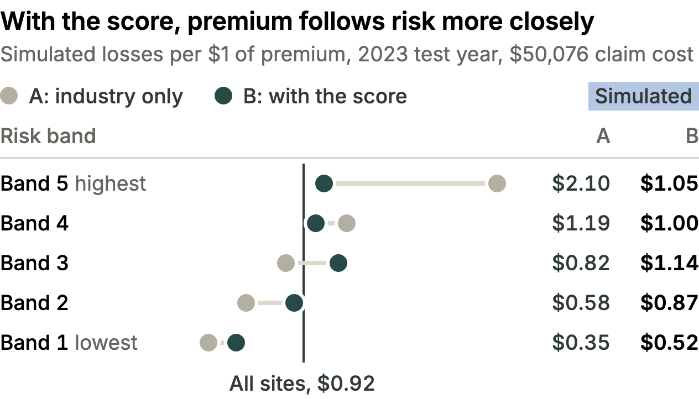
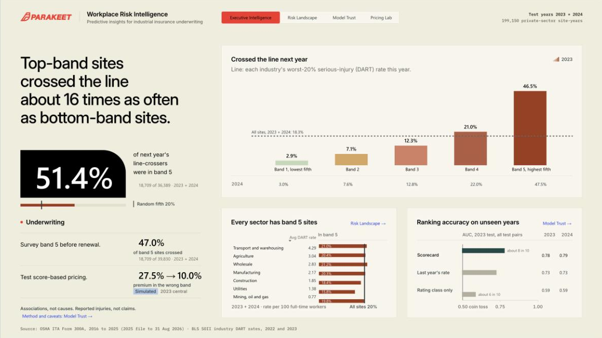
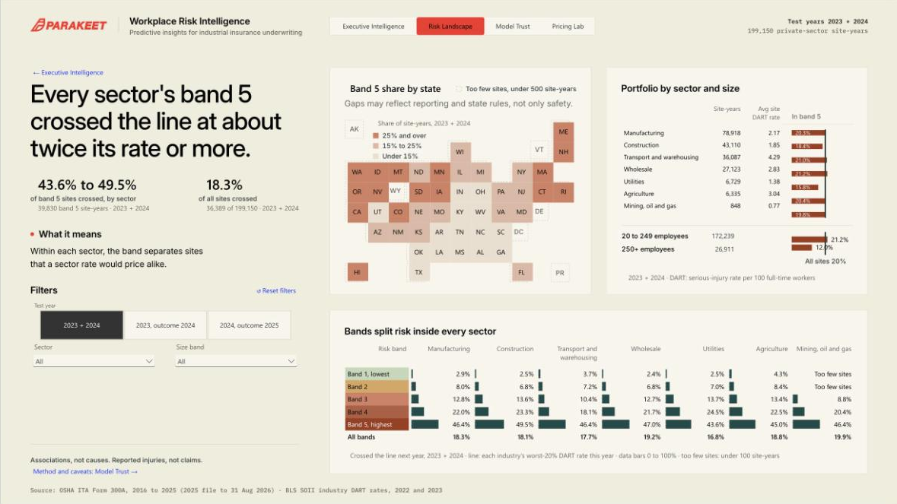
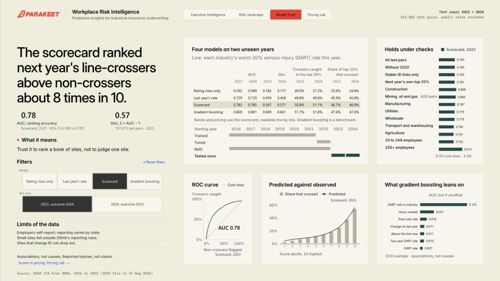
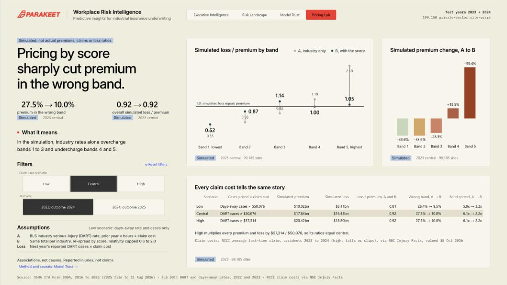

Many US workplaces send OSHA a yearly injury summary, which OSHA publishes free. We used 10 years of them to build and test a risk score for industrial sites. Tested on results it never saw while learning, the score put half of the sites that had a bad year in its top fifth.
David Ajayi, data analysis intern, Parakeet Risk
Why we started
Workers’ compensation, the insurance that pays when someone is hurt at work, starts from a set rate for each type of business, applied to its payroll. Larger employers can have it adjusted for their own past claims, but many smaller businesses don’t qualify. So two similar businesses can pay much the same even when one is much safer. We asked whether OSHA’s injury records could show which sites are heading for a bad year, and whether pricing with them would move premium, the price of insurance, toward the riskier sites.
How we did it
Gather the records. OSHA, the US workplace-safety agency, publishes the yearly summaries that larger and higher-risk sites must send. We used 2016 to 2025: about 3.2 million records.
Keep comparable sites. We kept industrial ones, such as manufacturing, construction and transport, with 20 or more employees and at least 20,000 hours worked. We set aside impossible hours and treated blanks as unknown, not zero.
Link each site to its next year where we could. That gave 799,158 pairs starting in 2016 to 2024: a site’s record one year and its result the next.
Define a bad year before looking at results. The DART rate counts serious injuries and illnesses that meant days away from work, lighter duties or a job transfer, per 100 full-time workers. A site has a bad year, or “crosses the line,” when its rate next year is above the line marking its industry’s worst 20% of sites this year.
Build the score, then test it. A scorecard gives each site points for its last one or two years of injury records, its hours, sector, size, state and ownership. It learned from 2016 to 2021, took a practice test on 2022 to pick a setting, then relearned from 2016 to 2022. Pairs starting in 2023 and 2024, with results in 2024 and 2025, stayed locked away until every setting was fixed, like a final exam.
Sort the test sites into five equal-sized risk bands. Band 1 is the lowest risk and band 5 the highest. Then test pricing in a simulation.
From 799,158 to 199,150. Of the 799,158 pairs, 583,356 taught the score and 215,802, starting in 2023 and 2024, tested it; every AUC figure uses those. The bands and pricing use the 199,150 private-sector test pairs, or site-years, as the pricing uses private-industry injury rates. That leaves out 16,315 pairs from government or unknown-ownership sites and 337 missing next-year injury details.
What we found
51.4%
of sites that later had a bad year were in band 5
18,709 of 36,389 site-years 2023 + 2024
47.0%
of band 5 sites had a bad year (all sites: 18.3%)
18,709 of 39,830 site-years 2023 + 2024
0.78
AUC ranking skill (0.59 without injury history)
0.50 is a coin toss 107,673 test pairs · 2023
27.5% → 10.0%
of premium in the wrong band, without and with the score
Simulated2023 test year $50,076 claim cost
The bands sort sites clearly. In the 2023 test year, 46.5% of band 5 sites crossed the line the next year, against 2.9% of band 1 sites: about 16 times as often. 2024 was almost the same, at 47.5% against 3.0%. Across both years, band 5 held a fifth of the sites but just over half of those that had a bad year. In every sector, band 5 sites crossed the line at more than twice their sector’s rate.
Even so, more than half of band 5 sites did not have a bad year. A band describes a group of sites, not a certainty for any one of them.

199,150 private-sector site-years (99,185 in 2023, 99,965 in 2024). A site in both test years counts once in each.
The score ranks sites well. Pick at random one site that went on to have a bad year and one that didn’t: AUC is the chance that the score ranks the first one higher. A coin toss scores 0.50 and a perfect ranking 1.00. Our scorecard reached 0.78 in 2023 and 0.79 in 2024, against 0.73 for last year’s DART rate on its own and 0.59 for sector, size, state and ownership alone. AUC measures how well the score ranks many sites. It says nothing certain about any single one.
In a simulation, pricing with the score puts premium much closer to the risk. We priced the 199,150 site-years two ways, keeping each industry’s total the same. Method A charged every site in an industry the same price per hour worked, set by the industry’s published injury rate. Method B shared that total out by score, within limits. Under A, safer bands overpaid and riskier ones underpaid: 27.5% of premium sat in the wrong band in the 2023 test year, meaning it would have to move between bands to match each band’s share of simulated losses. Under B, 10.0% did (26.7% and 9.3% in 2024). SimulatedNot actual premiums, claims or loss ratios.

All 215,802 test pairs, public-sector sites included. Gradient boosting, a more complex model, ranks slightly better but is harder to explain, so we use the scorecard.

Losses are next year’s DART cases times a $50,076 average claim cost. Totals are equal under A and B: the score only moves premium.
What we built
The results live in one Power BI report, published as Workplace Risk Intelligence. Each page states one finding on the left, with its key figures and a caution, and shows the evidence on the right. Every figure on each page as it opens was checked against the verified results, and every filter, link and button was tested.
How to use it. Move with the tabs or the blue links, and filter on the left of pages 2 to 4. A drill-through from page 1 keeps Risk Landscape on one sector until you press Reset to default in the top toolbar. The report shows only groups of sites, with data export off. Jowanza has read-only access and decides who else sees it.

1. Executive Intelligence
Start here: crossing rates by band, band 5 by sector and AUC. Right-click a sector, then Drill through.

2. Risk Landscape
Band 5 sites by state, sector and size, and each band’s crossing rate by sector.

3. Model Trust
The scorecard’s ranking against three other models, and by sector and size. Pick a model and a test year.

4. Pricing Lab
Simulated A and B pricing by band. For every claim cost and test year, premium in the wrong band falls.
Why it matters
Built on free public records, the score ranks industrial sites far better than sector, size, state and ownership alone, and the 2025 file already holds 149,200 sites that meet the rules for scoring. That makes it a cheap early warning for Parakeet: send safety surveys and risk-engineering visits to band 5 first, and test the score on an insurer’s own claims before prices change.
Its limits. The score predicts injuries and illnesses employers report to OSHA, not insurance claims, and some go unreported. It shows patterns, not causes, and each year’s records arrive only after the year they predict has begun. Two test years are a short track record, and all pricing is simulated. Still, a workplace’s own public injury record is a strong, free clue to which sites are most likely to have a bad year next.
Sources: OSHA Injury Tracking Application, Form 300A, 2016 to 2025 (2025 file to Aug 31, 2026); BLS SOII industry DART and days-away rates, 2022 and 2023; NCCI average lost-time claim cost ($50,076, accidents 2023 to 2024) via NSC Injury Facts; screens from the live report.